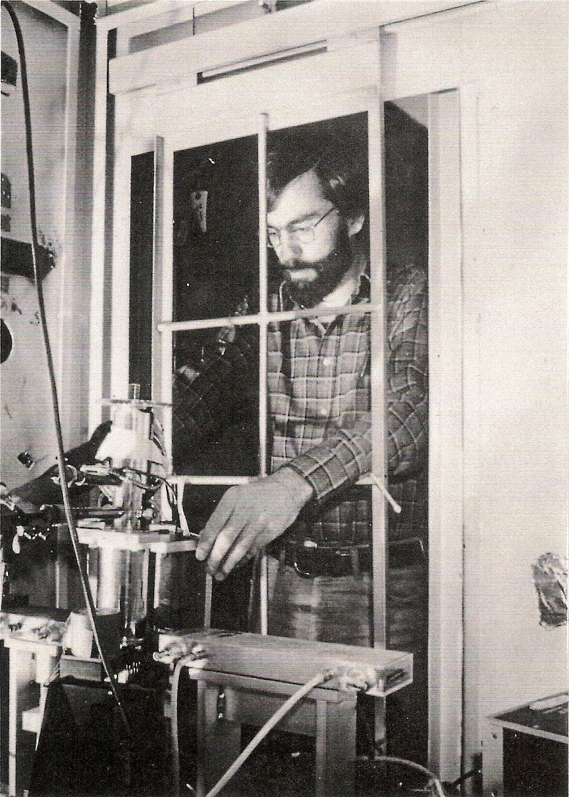

User Facilties Have a Data Problem
...and many Data Opportunities! :-D
It starts at data acquisition.
The solution has start there too.
What changed to make data problems harder?
- Sources got brighter; detectors got larger and faster: greater data velocity and volume.
- This exposes the variety problem we
have at user facilties:
- large and changing collection of instruments
- wide span of data rates, structures, and access patterns
- mix of well-established data processing procedures and original, improvised techniques
- Multi-modal analysis makes this an N^2, ... problem.
What changed to make data problems easier?

Figure Credit: "State of the Stack" by Jake VanderPlas, SciPy Conference 2015
HPC is becoming more accessible.
One inviting example: jupyter.nersc.gov
- Jupyter as a familiar, user-friendly portal
- Dask for familiar numpy/pandas idioms distributed over many nodes
- across instuments within a facility
- between facilities
- with outside communities with similar data problems (e.g. climate science)

...which is not a new idea, but ease-of-use matters.

Status Quo:
Data and Metadata are Scattered
- Some critical context is only in people's heads
- Many file formats (tif, cbf, Nexus, other HDF5, proprietary, ...)
meta_data_in_37K_fname_005_NaCl_cal.tif- "Magic numbers" buried in analysis tools
- Notes in paper notebooks
What's the problem?
- Not machine-readable or searchable
- Relationship between any two pieces of data unclear
- Inhibits multi-modal work
- Inhibits code reuse
- Not streaming friendly
The data-management equivalent of reaching through a cage to access the hutch....
SSRL, 1979. George Brown reaching through a caged hutch door. H/T Ron Pindak.
It's a good start, but it doesn't scale.
What do we need to systematically track?
Experimental Data
- Analysis needs more than "primary" data stream
- Timestamps
- Secondary measurements
- "Fixed" experimental values
- Calibration / beam-line conguration data
- Hardware settings
- Hardware diagnostics
- Physical details of the hardware
Sample Data
- What is the sample?
- What is the contrast mechanism?
- Why are we looking at it?
- How was it prepared?
Bureaucratic & Management Information
- Where is the data and how to get it?
- Who took the data?
- Who owns or can access the data?
- How long will we keep the data?
Design Goals
- Generic across science domains
- Lightweight
- Put metadata in a predictable place
- Handle asynchronous data streams
- Support muti-modal
- Simultaneous, cross-beamline, cross-facility
- Support streaming
- Cloud friendly
- Live visualization
- Live data reduction and "first pass" analysis
- Adaptive experiment logic
 |
 |
 |

Layered design of Python libraries that are:
- co-developed and compatible...
- ...but individually usable and useful
- with well-defined programmatic interfaces
Looking at each component, from the bottom up....
You might have a pile of hardware that communicates over one or more of:
-
 Experimental Physics and Industrial Control System (EPICS)
Experimental Physics and Industrial Control System (EPICS)
- LabView
- Some other standard
- Some vendor-specific, one-off serial or socket protocol
Ophyd: a hardware abstraction layer
- Put the control layer behind a high-level interface with methods like
trigger(),read(), andset(...). - Group individual signals into logical "Devices" to be configured and used as one unit.
- Assign signals and devices human-friendly names that propagate into metadata.
- Categorize signals by "kind" (primary reading, configuration, engineering/debugging).
Example
Suppose I want to control two new "frobulators". This ophyd code configures them for integration with bluesky.
from ophyd import Device, Signal, Component
class Frobulator(Device):
intensity = Component(Signal, ...)
x = Component(Signal, ...)
y = Component(Signal, ...)
exposure_time = Component(Signal, ..., kind='config')
sensor_temp = Component(Signal, ..., kind='omit')
frobulator1 = Frobulator(...)
frobulator2 = Frobulator(...)BlueSky: an experiment specification and orchetsration engine
- Specify the logic of an experiment at a high level (e.g.
scan). Employ low-level detail/control (e.g.trigger) only when you need it. - First-class support for adaptive feedback between analysis and acquisition.
- Data is emitted in a streaming fashion in standard Python data structures.
- Pause/resume, robust error handling, and rich metadata capture are built in.
DataBroker: rich search and access to saved data
- An API on top of a database (e.g. MongoDB)
- Search on arbitrary user-provided or automatically-captured metadata.
- Streaming-friendly (lazy)
- Exactly the same layout originally emitted by bluesky, so consumer code does not distinguish between "online" and saved data
Key Goal of DataBroker: Keep I/O Concerns Separate!
- The system is unopinionated about data formats.
- Any file I/O happens transparently: the user never sees files, just gets data in memory (e.g. a numpy array).
- Your detector writes in a special format? Register a custom reader at runtime.
- Import and exporters for some common file formats are built in. More are on the way....
Because the data is emitted from bluesky as standard Python types, it is easy to leverage the Python ecosystem for online...
- visualization
- reduction or compression
- analysis
- network transport (e.g. to HPC)
- file export
What about large arrays, like images?
The Parable of Bluesky's Event Model
Ophyd's Verbs
The Parable of Bluesky's Event Model